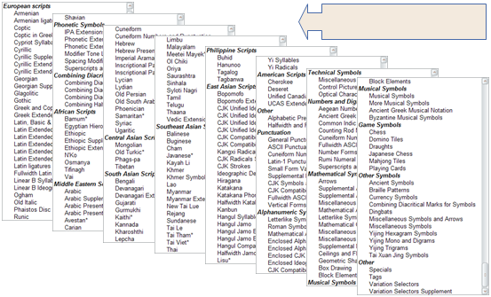

Intended audience:
codificadores de XHTML/HTML (que usen editores o lenguaje de script), desarrolladores de sistemas de escritura (PHP, JSP, etc.), codificadores de CSS y todo aquel que no conozca la terminología de la codificación de caracteres y busque comprender los conceptos básicos.
En este artículo se presentan distintos conceptos básicos necesarios para comprender otros artículos que tratan cuestiones vinculadas con caracteres y codificación de caracteres.
Unicode es un set de caracteres universal, es decir, un estándar en el que se definen todos los caracteres necesarios para la escritura de la mayoría de los idiomas hablados en la actualidad que se usan en la computadora. Su objetivo es ser, y, en gran medida, ya lo ha logrado, un superconjunto de todos los sets de caracteres que se hayan codificado.
El texto que aparece en la computadora o en la Web se compone de caracteres. Los caracteres representan letras del abecedario, signos de puntuación y otros símbolos.
En el pasado, distintas organizaciones han recopilado diferentes sets de caracteres y han creado codificaciones específicas para ellos. Un set puede abarcar tan sólo los idiomas de Europa occidental con base en el latín (sin incluir países de la UE como Bulgaria o Grecia), otro set puede contemplar un idioma específico del Lejano Oriente (como el japonés), y otros pueden ser parte de distintos sets diseñados especialmente para representar otro idioma de algún lugar del mundo.
Lamentablemente, no es posible garantizar que su aplicación particular pueda soportar todas las codificaciones, ni que una determinada codificación pueda soportar todos sus requerimientos para la representación de un cierto idioma. Además, generalmente resulta imposible combinar distintas codificaciones en la misma página web o en una base de datos, por lo que siempre es muy difícil soportar páginas plurilingües si se aplican enfoques "antiguos" cuando se trata de tareas de codificación.
El Consorcio Unicode proporciona un único y extenso set de caracteres que pretende incluir todos los caracteres necesarios para cualquier sistema de escritura del mundo, incluyendo sistemas ancestrales (como el cuneiforme, el gótico y los jeroglíficos egipcios). Hoy resulta fundamental para la arquitectura de la Web y de los sistemas operativos, y las principales aplicaciones y navegadores web incluyen soporte para este elemento. En el Estándar Unicode también se describen las propiedades y algoritmos necesarios para trabajar con caracteres.
Este enfoque facilita mucho el trabajo con sistemas o páginas plurilingües y responde mucho mejor a las necesidades del usuario que la mayoría de los sistemas de codificación tradicionales.
A continuación se muestran bloques de script Unicode, según la versión 5.2 de Unicode:

Se considera que las primeras 65.536 ubicaciones de puntos de código en el set de caracteres Unicode constituyen el Plano plurilingüe básico (Basic Multilingual Plane, BMP). El BMP incluye la mayoría de los caracteres utilizados más frecuentemente.
El número 65.536 es 2 elevado a la 16. En otras palabras, la cantidad máxima de combinaciones de bits que se pueden obtener en dos bytes.
El set de caracteres Unicode también contiene espacio para aproximadamente un millón de ubicaciones de puntos de código adicionales. Los caracteres en este último rango se denominan caracteres complementarios.
Es importante hacer una clara distinción entre los conceptos "set de caracteres" y "codificación de caracteres".
Un set de caracteres o repertorio comprende el grupo de caracteres que se utilizarían para una finalidad específica, ya sea los necesarios para el soporte de los idiomas de Europa Occidental en la computadora, o los que aprendería en el colegio un niño chino en tercer grado (sin relación con la computadora).
Un set de caracteres codificados es un grupo de caracteres en el que se ha asignado un número exclusivo a cada carácter. Las unidades de un set de caracteres codificados se conocen como puntos de código. El valor de un punto de código representa la ubicación de un carácter en el set de caracteres codificados. Por ejemplo, el punto de código para la letra á en el set de caracteres codificados Unicode es 225 en notación decimal, o E1 en notación hexadecimal. (Tenga presente que la notación hexadecimal generalmente se utiliza para hacer referencia a puntos de código y es la que se usará aquí).
En algunos casos, los sets de caracteres codificados se denominan páginas codificadas.
La codificación de caracteres refleja la manera en la que el set de caracteres codificados se convierte a bytes para su procesamiento en la computadora. En la siguiente imagen se muestra cómo se convierten a secuencias de bytes en memoria los caracteres y puntos de código del sistema de escritura Tifinagh (Berber) mediante la codificación UTF-8. Los valores de los puntos de código para cada carácter se enumeran inmediatamente debajo del glifo (es decir, la representación visual) correspondiente a dicho carácter en la parte superior del diagrama. Las flechas indican de qué manera estos elementos se convierten en secuencias de bytes, donde cada byte está representado por un número hexadecimal de dos dígitos. Observe cómo los puntos de código de Tifinagh se convierten en tres bytes mientras que el signo de exclamación se convierte en un solo byte.
En esta explicación se trata muy brevemente la nomenclatura detallada vinculada con la codificación. Para más información, consulte Informe técnico sobre Unicode N.° 17.
Un set de caracteres, múltiples codificaciones. Muchas normas en materia de codificación de caracteres, como aquellas incluidas en la serie ISO 8859, emplean un solo byte para un determinado carácter y la codificación es una conversión sencilla a la ubicación escalar de los caracteres en el set de caracteres codificados. Por ejemplo, en el set de caracteres codificados de la norma ISO 8859-1, la letra A se encuentra en la ubicación N.° 65 (comenzando por cero) y está codificada para representación en la computadora mediante un byte al que corresponde el valor 65. Esta organización de ISO 8859-1 es fija y no se modifica.
En Unicode, sin embargo, el proceso no es tan sencillo. Mientras que el punto de código para la letra á en el set de caracteres codificados Unicode es siempre 225 (en decimal), en UTF-8 se representa en la computadora mediante dos bytes. En otras palabras, no existe una correspondencia uno a uno entre el valor del set de caracteres codificados y el valor de codificación para este carácter.
Además, en Unicode existen distintas formas de codificar el mismo carácter. Por ejemplo, la letra á se puede representar mediante dos bytes en una codificación y con cuatro bytes, en otra. Los formatos de codificación que se pueden usar con Unicode se denominan UTF-8, UTF-16 y UTF-32.
UTF-8 utiliza 1 byte para representar caracteres en el set ASCII, dos bytes para caracteres en otros bloques alfabéticos y tres bytes para el resto del BMP. Para los caracteres complementarios se utilizan 4 bytes.
UTF-16 utiliza 2 bytes para cualquier carácter en el BMP y 4 bytes para los caracteres complementarios.
UTF-32 emplea 4 bytes para todos los caracteres.
En el siguiente gráfico, la primera línea de números representa la ubicación de un determinado carácter en el set de caracteres codificados Unicode. En las otras líneas, se muestra el valor de los bytes utilizados para representar dicho carácter en una codificación de caracteres específica.
Para XML y HTML (de la versión 4.0 en adelante), el set de caracteres para documentos es el set de caracteres universales (Universal Character Set, UCS) tal como se define en las normas ISO/IEC 10646 y Unicode. (Para que resulte más sencillo y siguiendo las prácticas comunes, aquí se hará referencia al UCS simplemente como Unicode).
Esto significa que el modelo lógico que especifica la manera de procesar XML y HTML se describe en términos del set de caracteres definido por Unicode. (En términos prácticos, significa que habitualmente los navegadores convierten internamente todo el texto a Unicode).
¡Esto no quiere decir que todos los documentos HTML y XML deban usar la codificación Unicode! Significa, en cambio, que estos documentos sólo pueden contener caracteres definidos por Unicode. Puede utilizar cualquier codificación para sus documentos, siempre que se haya declarado correctamente y que los caracteres que representa el set conformen un set secundario del repertorio Unicode.
El escape de caracteres es una forma de representar caracteres sin usar efectivamente el propio carácter.
Por ejemplo, no existe una manera de representar directamente el carácter hebreo א en un documento si se utiliza una codificación ISO 8859-1 (que cubre los idiomas de Europa Occidental). Una forma de indicar que desea incluir dicho carácter es utilizar el escape XHTML א. Como el set de caracteres del documento es Unicode, el agente de usuario debería reconocer que este elemento representa el carácter hebreo alef.
Al recuperar un documento del servidor, este último generalmente envía información adicional junto con el documento. Esto es lo que se denomina encabezado HTTP. A continuación se muestra un ejemplo del tipo de información sobre el documento que incluye el encabezado HTTP mientras el elemento se traslada del servidor al cliente.
En este ejemplo, la anteúltima línea incluye información acerca de la codificación de caracteres del documento.
HTTP/1.1 200 OK
Date: Wed, 05 Nov 2003 10:46:04 GMT
Server: Apache/1.3.28 (Unix) PHP/4.2.3
Content-Location: CSS2-REC.en.html
Vary: negotiate,accept-language,accept-charset
TCN: choice
P3P: policyref=http://www.w3.org/2001/05/P3P/p3p.xml
Cache-Control: max-age=21600
Expires: Wed, 05 Nov 2003 16:46:04 GMT
Last-Modified: Tue, 12 May 1998 22:18:49 GMT
ETag: "3558cac9;36f99e2b"
Accept-Ranges: bytes
Content-Length: 10734
Connection: close
Content-Type: text/html; charset=UTF-8
Content-Language: en
Si su documento se creó en forma dinámica mediante lenguaje de script, podría agregar esta información explícitamente al encabezado HTTP. Si está ejecutando archivos estáticos, el servidor puede vincular esta información con los archivos. El método de configuración de un servidor para que trasmita información sobre codificación de caracteres de esta manera varía de un servidor a otro. Deberá consultar estas cuestiones al administrador del servidor.
A modo de ejemplo, los servidores Apache habitualmente incluyen una codificación predeterminada que, por lo general, se puede anular a partir de las configuraciones elegidas por el usuario. Por ejemplo, un usuario puede agregar la siguiente línea a un archivo .htaccess para que todos los archivos con extensión .html se ejecuten como UTF-8 en este y en todos los directorios hijo: